Project 3: Image Quilting
Description of Implementation:
I implemented the image quilting algorithm as the paper
described. First, I choose a patch which matches the synthesized part
in the overlap region best under the measurement of SSD. Instead of
using exhaustive search, I only choose the patch among some randomly
cropped patches from the texture image. Then I use Graphcut to find a
good cut in the overlap region. It is a binary labeling problem in the
overlap region. The pairwise term between pixel p and q is defined as
(||S(p) - T(p)|| + ||S(q) - T(q)||)I(p, q). Here ||S(p) - T(p)|| is the
Euclidean color distance between texture patch and synthesized part at
pixel p. I(p, q) is an indicator function and it equals to 1 when p and
q are assigned to different labels. Solving the problem will get a
trivial solution as all pixels will be assigned to the same labels as
there will be no cost then. As we know the color assignment outside the
loverlap region, I make the graph one pixel wider and enforce the pixel
labeling in this extra region to be what it should be by adding a large
unary term. Then the Graphcut will find a good cut. Then I assign the
color of the new texture patch to the synthesis image according to the
labeling. Besides the image quilting algorithm, I also implemented the
algorithm without minimum error path calculation.
For texture transfer, the difference is the calculation of error term and an iterative approach.
Test Images:
The left one in each row is the result without minimum error
path calculation and the right one is the result with minimum error
path calculation.
Leaf:
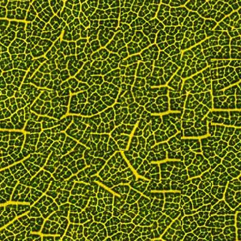 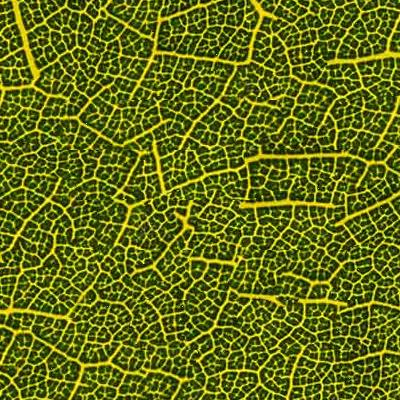
Caustics:
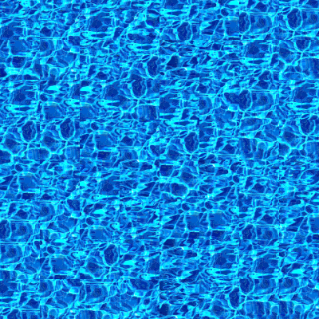 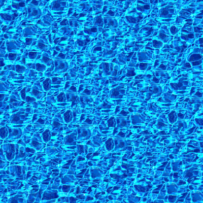
FarmAerial:
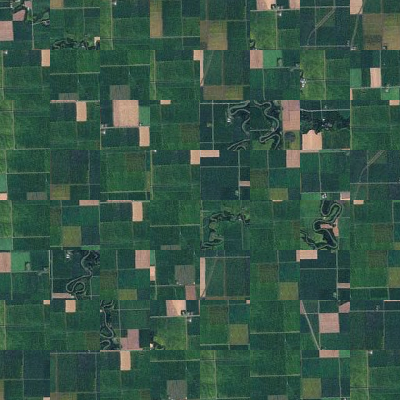 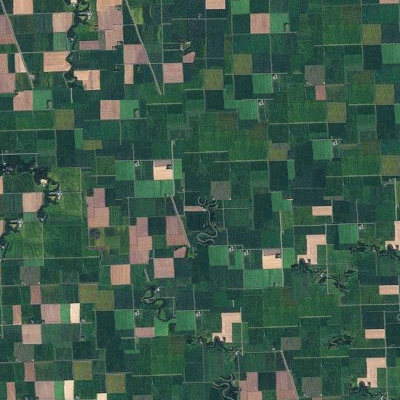
Text:
Input:
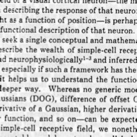
Results:
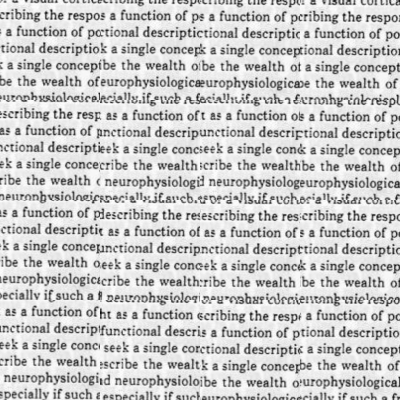 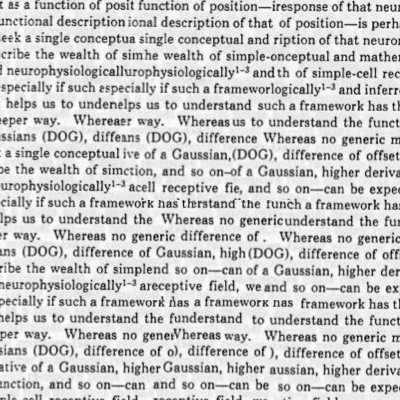
The text aligns better with minimum error path calculation.
Minions:
Input:
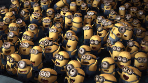
Results:
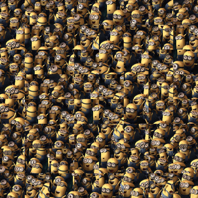 
A lot of Minions!
Mess:
Input:
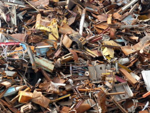
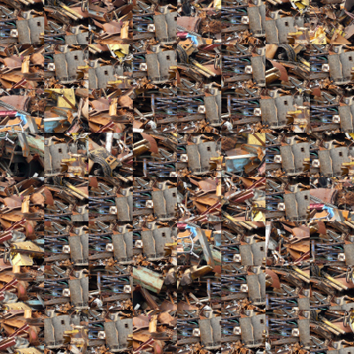 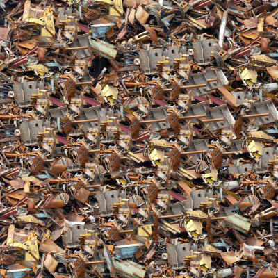
The mess looks more messy.
Texture Transfer Results:
Shrek:
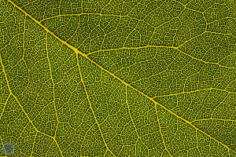 +  =
= 
Simba:
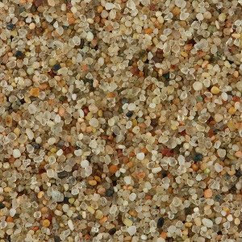 + 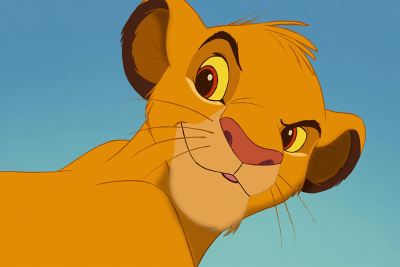 = 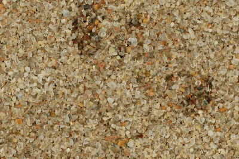
Nemo:
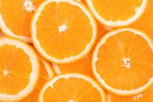 +  = 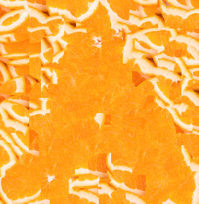
= 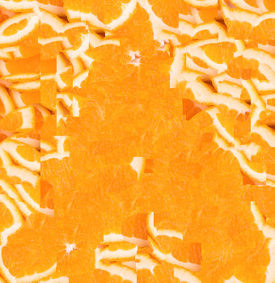
Link to Code:
code.zip